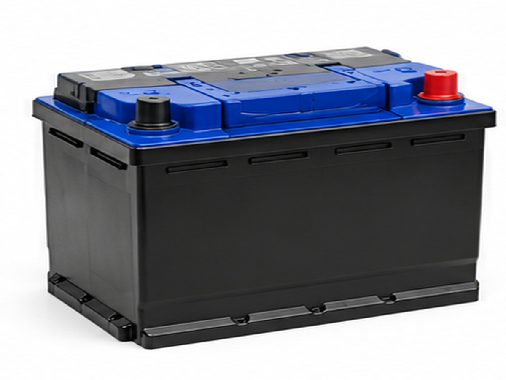

АккумуляторНе держит заряд
Электрика
Аккумулятор
На фото — автомобильный аккумулятор. Этот гайд подходит, когда АКБ быстро разряжается, плохо держит заряд и мотор запускается всё тяжелее.
Признаки: медленный запуск, щелчки стартера, тусклый свет, повторный разряд после стоянки.